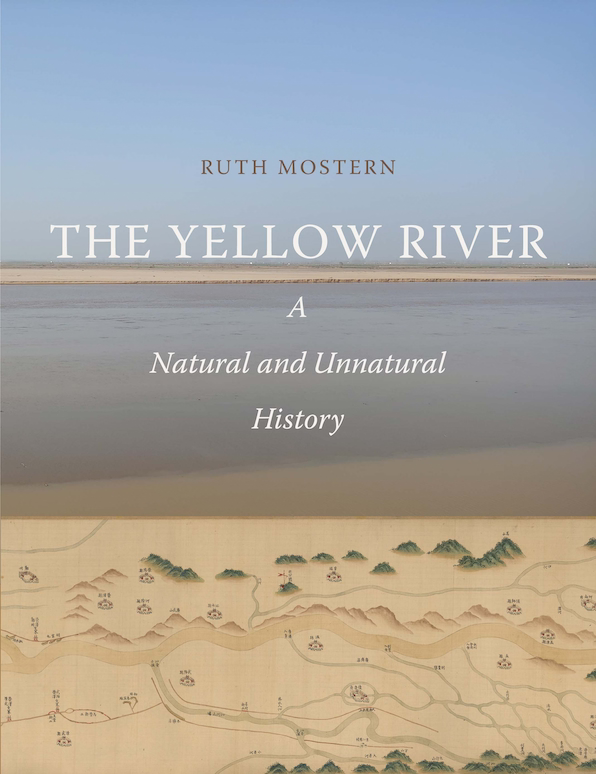
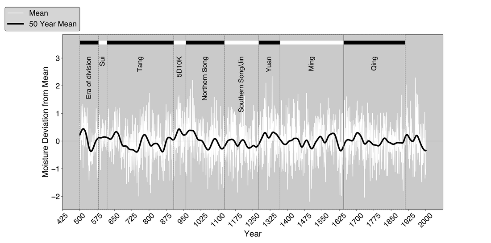
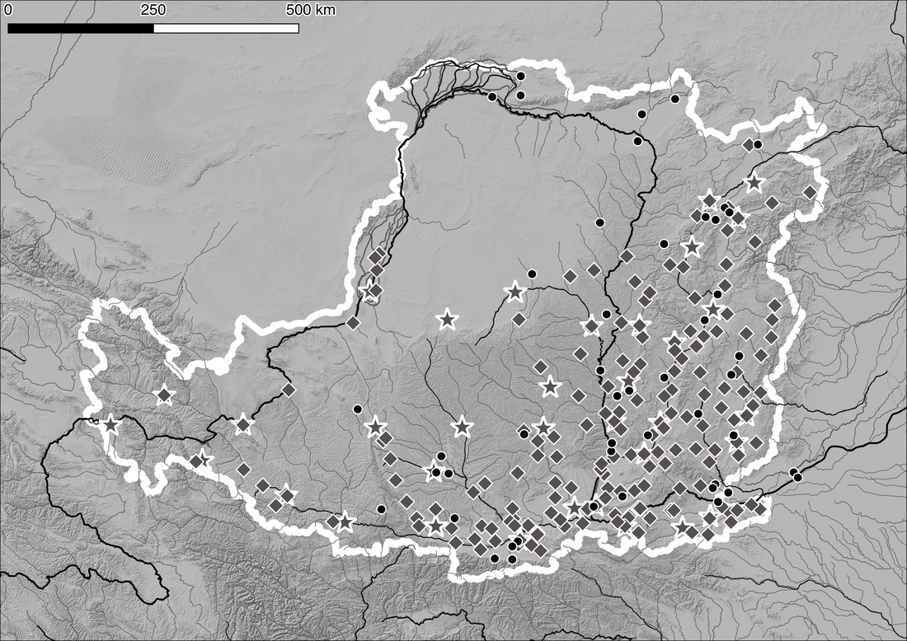
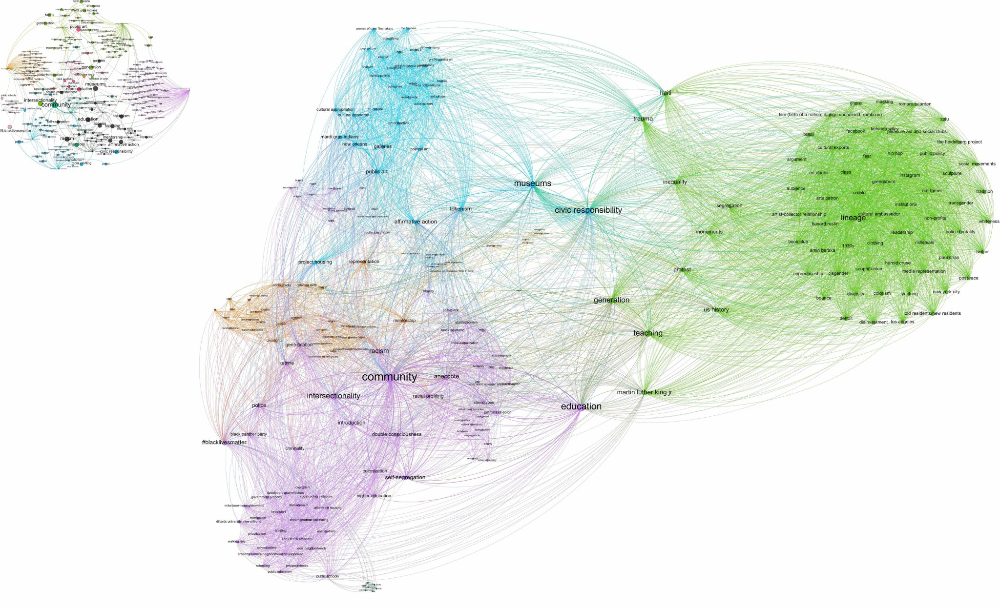

Digital Portfolio
Publication
Mostern, Ruth. The Yellow River: A Natural and Unnatural History
I built the database, information system, and constructed the infographics, charts, and maps for Ruth Mostern’s monograph, which was the Winner of the 2022 Joseph Levenson Prize (China, Pre-1900), sponsored by the Association for Asian Studies.




Aeolian Alexanders

Aeolian Alexanders, a NEH-Mellon funded digital publication project, combines social network analysis, historical geographic information systems, digital humanities, linked data, and numismatics. You can read the digital publication or go to the github site to see the code.
Digital Gazetteers
The Pleiades Project

I am an editor for the Pleiades Project, a gazetteer and graph offering authoritative data on over 36,000 sites in the ancient world. In addition to my content and editorial contributions, I have been working extensively on applying network analysis to the data set, creating new cartographical approaches to mapping place data, dealing with uncertainty, and creating new methods for exploring and representing the connectivity between places.
Big Ancient Mediterranean (BAM)
BAM is an open-access project that integrates GIS tools, network analysis, and textual annotation/data mining capabilities in order to allow the exploration and visualization of ancient texts in new ways. BAM provides a modular framework which can be utilized by any number of different projects, and I have used the codebase to construct projects covering subjects ranging from the ancient world to today. I am also using BAM to explore methods to visualize and display data that is a mix of locatable and non-locatable entities. You can download the code here: https://github.com/Big-Ancient-Mediterranean/BAM.
Network Analysis
The Black Lunch Table


This is an interdisciplinary project that studies cultural production and critical dialogue on racial issues. Started as a collaboration between UNC professors and working artists, Black Lunch Table brings together groups of African-American artists, academics, and activists throughout the United States. These groups have set dialogue topics, and the ensuing conversation is electronically archived and will be presented on an open access website. I led the design and development of new digital humanities methodologies and software for the project, including a combination of social network analysis and natural language processing to create innovative interfaces to catalog, search, and visualize the Black Lunch Table audio archives.
UNC Knowledge Networks
 This project, developed for the Institute for the Arts and Humanities at UNC Chapel Hill, identified previously unknown communities of common research interests at the university. It uses Library of Congress Subject Headings to categorize common faculty research interests, and deployed the Louvain method for community detection.
This project, developed for the Institute for the Arts and Humanities at UNC Chapel Hill, identified previously unknown communities of common research interests at the university. It uses Library of Congress Subject Headings to categorize common faculty research interests, and deployed the Louvain method for community detection.
Women of Ancient History (WOAH)

I created the initial functional prototype of WOAH. This project aims to provide accurate information on research interests and knowledge networks of women who study ancient history, in part to counteract the field’s prevalent gender imbalance found in academic conferences and publications. It is built on a crowd-sourced data set, and deployed the BAM software suite to highlight common research interests and the geographical distribution of women at institutes of higher education.
Web Applications
Antiquity À-la-carte application

This is a web-based GIS interface and interactive digital atlas of the ancient world, featuring accurate historical, cultural, and geographical data produced by the AWMC in addition to the entire Pleiades Project feature set. The map is completely searchable with customizable features, allowing for the creation of any map covering Archaic Greece to Late Antiquity and beyond. Click here or on the image above in order to launch the map application. This application works best with Firefox, Chrome, or Safari. The application is hosted on a custom installation of Mapserver, and is built with OpenLayers, GeoExt, and MapFish, with a PostGIS backend. For a sample use of À-la-carte in scholarship, see Kurt A. Raaflaub and John T. Ramsey, Reconstructing the Chronology of Caesar’s Gallic Wars, Histos 11, April 2017.
Strabo Online

Made to accompany Duane W. Roller’s English translation of Strabo’s Geography ( ISBN: 9781107038257; e-book ISBN: 9781139950374), this is a seamless, interactive online map which is accessible for free here: http://awmc.unc.edu/awmc/applications/strabo. The application is built on the Antiquity À-la-carte interface, and plots the more than 3,000 locatable geographical and cultural features mentioned in the 17 books of this Greek source , stretching from Ireland to the Ganges delta and deep into north Africa. Like the Antiquity À-la-carte application, Strabo Online is hosted on a custom installation of Mapserver, and is built with OpenLayers, GeoExt, and MapFish, with a PostGIS backend and DataTables to assist with the presentation of the database.
Peutinger Map A

I finished a codebase originally begun by David O’Brien and Sean Gillies in support of Richard J.A. Talbert, Rome’s World: The Peutinger Map Reconsidered (Cambridge University Press, 2010). This viewer shows the Peutinger Map as a seamless whole, in color, with overlaid layers. The application is built with the Djatkoa JPEG 2000 Image Server and OpenLayers.
The AWMC API
 (http://awmc.unc.edu/api/)
(http://awmc.unc.edu/api/)
:** This allows the user access to all of the AWMC’s geographical information, both physical and cultural, using stable URIS. It is built with OpenLayers, PostGIS, and DataTables, with styling from WordPress and BuddyPress. It interfaces with the Pelagios Project using linked data principles, specifically through RDF. For a full explanation of how this was accomplished, please see this post.
Hierokles, Synekdemos

The Center’s single, interactive web map follows the text of Hierokles, Synekdemos in Ernest Honigmann’s edition (Brussels, 1939), and aims to supersede his four maps. With the Center’s Map Tiles as its base, the map marks all cities and regions which may identified and located with at least some confidence according to the Barrington Atlas and related publications listed below. Greek names are transliterated as in the Barrington Atlas (see Directory, p. vii). A full database lists all the place-names in the Synekdemos with references (thus including those that cannot be located and marked on the map). In addition, the text of Honigmann’s edition of the Synekdemos (and of the geographic work of George of Cyprus) is accessible via the Center’s Dropbox.
Geographic Information Systems
AWMC Map tiles

Offering the first (and at the time of this writing, only) geographically accurate base map of the ancient world, the AWMC tiles conform to the broad periodization presented in the Barrington Atlas, with different selectable water levels for the Archaic, Classical, Hellenistic, Roman, and Late Antique Periods. In addition, we also model inland water, rivers, and other geographical features as they appeared in antiquity. The base tiles are culturally agnostic, allowing them to be used to represent the physical environment of nearly any ancient society in the Mediterranean world.
These tiles are used by Pleiades, Harvard’s Digital Atlas of Roman and Medieval Civilizations, Stanford’s ORBIS application, and the Istituto di Studi sul Mediterraneo Antico, amongst others.
Print Maps
 Hispania in the Second Century C.E**: At 1:750,000, scale and measuring 58.5 inches tall by 68 inches (149 by 173 cm), this map is a new addition to the AWMC’s class map series, and it will be offered as a stand-alone product. More information is available from the flier linked here. A Draft Map was displayed at the Poster Session of the AIA New Orleans meeting, Friday 9 January 2015, 10:45 am to 3: 00 pm.
Hispania in the Second Century C.E**: At 1:750,000, scale and measuring 58.5 inches tall by 68 inches (149 by 173 cm), this map is a new addition to the AWMC’s class map series, and it will be offered as a stand-alone product. More information is available from the flier linked here. A Draft Map was displayed at the Poster Session of the AIA New Orleans meeting, Friday 9 January 2015, 10:45 am to 3: 00 pm.
 Asia Minor in the Second Century C.E**.: Like the map of Hispania, this map is produced at 1:750,000 scale, and is offered as a free download through the AWMC website. As a collaborative work, this map represents the current state of knowledge concerning Roman Anatolia, and was took several years to produce at the center. A draft of the map was presented by Richard Talbert at the ‘Roads and Routes in Anatolia’ conference organized by the British Institute at Ankara in March 2014.
Asia Minor in the Second Century C.E**.: Like the map of Hispania, this map is produced at 1:750,000 scale, and is offered as a free download through the AWMC website. As a collaborative work, this map represents the current state of knowledge concerning Roman Anatolia, and was took several years to produce at the center. A draft of the map was presented by Richard Talbert at the ‘Roads and Routes in Anatolia’ conference organized by the British Institute at Ankara in March 2014.
 Benthos: Currently in the Alpha stage, Benthos is a project of the Ancient World Mapping Center that aims to catalog and map the waters of the ancient Mediterranean basin, including both physical and cultural geography. The project will provide interactive maps of Mediterranean shipping networks, bathymetric data, and views of ancient coastlines. Currently the project is in a preliminary state, with a functional alpha version of the application based off of Antiquity À-la-carte.
Benthos: Currently in the Alpha stage, Benthos is a project of the Ancient World Mapping Center that aims to catalog and map the waters of the ancient Mediterranean basin, including both physical and cultural geography. The project will provide interactive maps of Mediterranean shipping networks, bathymetric data, and views of ancient coastlines. Currently the project is in a preliminary state, with a functional alpha version of the application based off of Antiquity À-la-carte.
Click here or on the image above in order to launch the map application. This application works best with Firefox, Chrome, or Safari.
Pleiades Project: Although I do not work with the code of the site, I am a co-managing editor
Through my work at the Ancient World Mapping Center I participated in the creation of numerous print maps for research, classroom use, and traditional publications. Some highlights are below.

This work is licensed under a Creative Commons Attribution-ShareAlike 4.0 International License.
Social Networks and Greek Garrisons